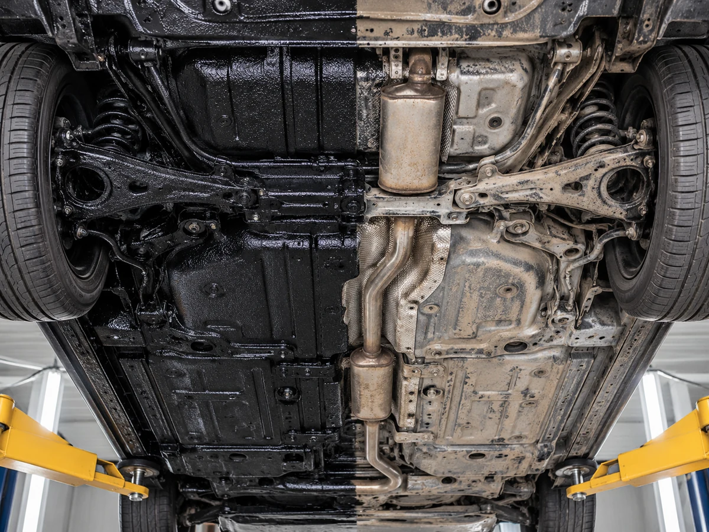

Днище и колёсные арки
Антикоррозийное покрытие помогает защитить зоны, которые контактируют с влагой и дорожными загрязнениями.

Антикоррозийная обработка автомобиля в Москве
Скидка 10% на шумоизоляцию арок
Скидка 5% на комплексы
Предложения действуют до 31 декабря 2026 года
Рассчитать стоимостьСтоимость для вашей модели — без номера телефона.
Открываемся в начале декабря

Антикоррозийное покрытие помогает защитить зоны, которые контактируют с влагой и дорожными загрязнениями.
Не все участки кузова видны при обычном осмотре. Эти зоны тоже важно проверить перед выбором защиты.
Коррозия может развиваться незаметно, ослабляя металл. Осмотр помогает определить, какая подготовка нужна.
На бесплатной диагностике оценим состояние автомобиля и объясним, какой пакет и подготовка ему подходят.
Если ржавчина уже появилась, начнём с бесплатного осмотра. Проверим состояние металла и объясним, какая подготовка нужна перед обработкой.
Выберите класс — покажем стоимость трёх пакетов.

Укажите марку и модель. Покажем фотографию автомобиля и три варианта защиты. Телефон для расчёта не нужен.
78 марок · 640 моделей
Три варианта защиты днища, колёсных арок и скрытых полостей.
Цены для класса SUV, минивэн

На днище, колёсные арки и скрытые полости наносим TEKKO ML с прозрачным жёлтым оттенком.
18 700 ₽

Днище и арки — чёрный защитный состав, скрытые полости — специальный восковой. Mercasol, TEKKO и Noxudol.
46 400 ₽

Профессиональные составы TEKKO и Noxudol с содержанием цинка. Усиленная защита днища, арок и полостей.
70 100 ₽
Цены по классу автомобиля. Подготовку и дополнительные работы согласуем после осмотра. Условия гарантии фиксируются в договоре и паспорте обработки.
| Класс | Старт | Стандарт | Премиум |
|---|---|---|---|
| A, B | 13 900 | 34 300 | 53 500 |
| C, D | 15 100 | 37 600 | 58 300 |
| E, S | 16 300 | 41 200 | 64 700 |
| SUV, минивэн | 18 700 | 46 400 | 70 100 |
| Рамные | 38 400 | 83 700 | 94 500 |
Посмотрите основные этапы работы.
Иллюстрация зон обработки. Потяните ползунок, чтобы сравнить.


Выбираем решение с учётом состояния автомобиля и необходимых работ.
Москва, Лётчика Бабушкина, 2. В навигаторе ищите «Антикорика».
Фиксируем обработку и проверяем результат перед выдачей автомобиля.
Профессиональные защитные материалы для разных зон автомобиля.
Официальный документ, подтверждающий проведение обработки вашего автомобиля.
В нём фиксируются выполненные работы, защитные материалы и основные этапы обработки. Паспорт сохраняет историю обслуживания.
Антикорика. Ржавчине нет шансов.
Рассчитать стоимость
Открываемся в начале декабря. Первые отзывы появятся после открытия центра.
После открытия здесь появятся реальные фотографии выполненных работ и сотрудников.
Запах возможен. Первые дни проветривайте салон, не оставляйте машину надолго в закрытом гараже.
Наше специализированное оборудование позволяет обрабатывать все труднодоступные места.
От четырёх до двенадцати часов.
Заводская защита обычно закрывает не все зоны: скрытые полости и швы часто остаются без состава. Поэтому мы рекомендуем делать антикоррозийную обработку даже на новых автомобилях.
Да, если металл не сгнил насквозь: очаги зачищаем и обрабатываем до нанесения состава. Если нужна сварка — скажем на осмотре, обработку в таком месте не делаем.
ДА. Нужно соблюдать технический регламент.
Мы предлагаем все способы оплаты.
Оставьте номер телефона — согласуем удобное время бесплатной диагностики.
Ответим в течение 5 минут в рабочее время.
Первая линия. Ориентир в навигаторе — «Антикорика».
Открытие в начале декабря.
Пока связаться с нами можно через мессенджеры.
Лётчика Бабушкина, 2
Карта загрузится по нажатию.